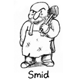
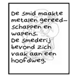
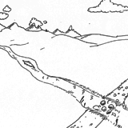
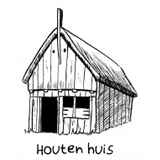

Opdracht middeleeuwse stad
- Onderwerp:
- De middeleeuwse stad
- Niveau:
- basisschool, eerste klas TL/H/V
- Werkvorm:
- groepswerk
- Auteur(s):
- Hayo van Reek
In deze opdracht maken de leerlingen op een creatieve manier kennis met de middeleeuwse stad. Er wordt gewerkt in groepen van vier tot zes leerlingen. Elke groep krijg een landschap waar de stad in gebouwd moet worden. het landschap is redelijk leeg maar bevat wel een hint over waar de stad het best gebouwd kan worden. Daarnaast krijgt iedere leerling een rol. Dit is een kaartje met op de voorkant een belangrijke functie in of rond de stad. Op de achterkant staat informatie die gebruikt moet worden bij het bouwen van de stad. Op de voorbeeldbladen vinden de leerlingen voorbeelden van middeleeuwse gebouwen.
Download product   